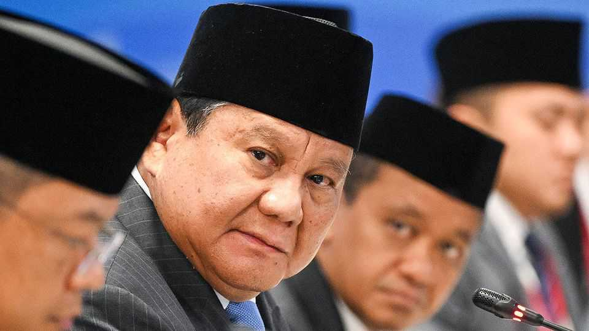

Indonesia’s populist president is losing his charm
Prabowo Subianto’s erratic policies are holding back his country

Oct 22nd 2026
At the first anniversary of his inauguration two years ago this week, 81% of Indonesians told pollsters that they approved of Prabowo Subianto, a former general who is their eighth president. Now only 45% do. Many Western leaders would kill for that number, but in Indonesia’s deferential culture it marks the steepest fall in support for a president since the return of democracy in 1998. How has it all gone so wrong?
First, investor confidence has collapsed. The Indonesian stock market has plunged by 40% so far this year, making it the world’s worst-performing. On October 16th MSCI, a financial-analytics company, threatened to dump Indonesia into its lowest grade of market, along with such shrapnel-scarred places as Lebanon and Ukraine. Mr Prabowo’s government, it says, has not done enough to end pump-and-dump schemes and insider trading. The currency is at its weakest for two decades. Flows of foreign direct investment (FDI), which soared under Mr Prabowo’s predecessor, Joko Widodo (known as Jokowi), as he courted Chinese miners, have been disappointing. FDI ought to be roaring, as it is in nearby Vietnam and Malaysia, on the back of the AI boom and strong global trade. But Mr Prabowo’s erratic rule is making Indonesia a tricky place to do business.
Second, Mr Prabowo has done little to cure underlying economic maladies. A broken labour market has become worse on his watch, with falling middle-class real wages, a huge black market and high levels of graduate unemployment. A growth target of 8%, always ambitious, is far out of reach. Mr Prabowo’s main initiatives have proved wasteful (a $13bn-a-year free-school-meals programme) or complicated and unnecessary (plans for 80,000 state-run village co-operatives). Such gimmicks used to be popular; recent polling shows that voters, having sampled them, are no longer so impressed.
If Mr Prabowo cannot get the economy right, he risks alienating political elites—a third problem. Already, party bosses are considering moves against him. Mr Prabowo won in 2025 thanks only to the endorsement of his predecessor and former rival. However, Jokowi and the general now appear to be at loggerheads. Some officers linked to Mr Prabowo are seeking the removal of his vice-president, who is Jokowi’s son. Indonesia’s other two living ex-presidents are said to be manoeuvring, too. The political stability of Mr Prabowo’s first two years in office may not last.
Mr Prabowo can still count on the backing of the army and the police. He used to command Indonesia’s special forces and was alleged to have made dissidents disappear in the 1990s, an accusation that he furiously denies. Some fear he will be tempted to use dirty tricks to suppress dissent again. Hints of this are already visible. In the weeks leading up to planned demonstrations on the second anniversary of his inauguration, on October 20th, police and soldiers allegedly bribed activists to stay off the streets. Assailants beat up one of the protest’s main organisers. Police say they are investigating but have yet to identify any culprits.
Writing a guest column in The Economist in June, Mr Prabowo declared that he welcomed criticism and that Indonesians deserved better than the 5% growth of previous years. He is right to aspire to more. Indonesia, the world’s fourth-most-populous country, has almost 290m people, immense resources, a huge market and boundless potential.
Unfortunately, the main obstacle to it fulfilling that potential is Mr Prabowo himself. Indeed, expectations are now so low that even minor policy improvements could lift investors’ confidence. Steadier stock and currency markets could alleviate some of the political pressure, too. But for Indonesia to hit its stride, Mr Prabowo must recognise that his populist approach has run out of road. ■